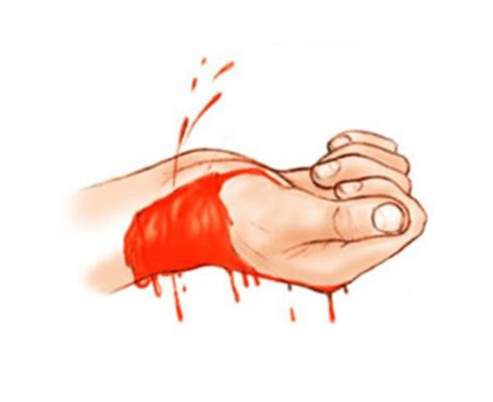
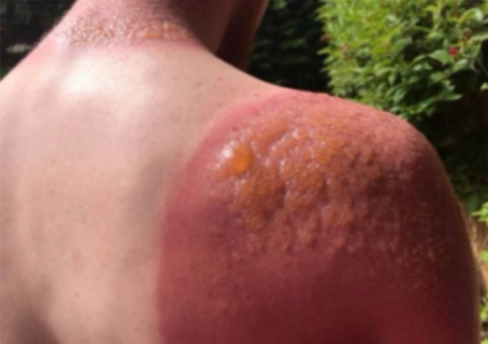

End-Rotation & Final
BEC Labs ⚕️ • 2021-2025
2020 - 20211 question
1.
A. What is the maneuver?
Back blows.
B. Purpose of the procedure?
Rescuing an infant from choking by applying pressure behind the blockage is often enough to expel the object and allow the infant to breathe again.
C. For which age if performed?
It is performed for infants (less than one year old).

2020 - 2021 Second Trial 1 question
2.
A. What is this in the image?
Electrical Shock.
B. Factors determining severity of injury?
1. Power of current
2. Age
3. Path of current
4. Time of contact

2021 - 20222 questions
3.
A. How is this burn classified?
Second-degree burn.
B. What clinical signs support this classification?
Presence of blisters and blanching.
C. What is the management protocol?
1. ABC assessment
2. I.V. Fluids & Antibiotics
3. Tetanus prophylaxis
2. I.V. Fluids & Antibiotics
3. Tetanus prophylaxis

4.
A. What is the maneuver?
Back blows.
B. Purpose of the procedure?
Removing foreign body aspiration.
C. For which age if performed?
For infants.
2021 - 2022 Second Trial2 questions
5.
A. What action is performed in the figure?
Elevating.
B. What is the purpose of it?
It limits blood flow and minimizes swelling.

6. What does the figure show?
Snake bite.

2022 - 20232 questions
7.
A. What is the procedure done?
CPR.
B. When is it used?
When there is no sign of life or when there is no pulse of heart or breathing.

8.
A. How is this burn classified?
Second-degree burn.
B. What clinical signs support this classification?
Presence of blisters and blanching.
C. What is the management protocol?
1. ABC assessment
2. I.V. Fluids & Antibiotics
3. Tetanus prophylaxis
2. I.V. Fluids & Antibiotics
3. Tetanus prophylaxis
2023 - 20242 questions
9.
A. Which vessel is cut?
Artery.
B. What is its charactersics?
Spurting blood, pulsating flow, and bright red color.

10.
A. What degree is the type of the burn?
Second degree.
B. What is its charactersics?
It has blister and it's caused by a flame or hot liquid and it's very painful.

2024 - 20257 questions
11. A boy was involved in an accident while playing football. Physical examination shows no bone deformity. During management, what is the most appropriate initial protocol?
Apply the RICE protocol (Rest, Ice, Compression, Elevation).
12. A patient presents with a wound caused by a piece of glass. The wound has regular margins and resembles one formed during a surgical procedure. What type of wound is this?
A. Incision
B. Puncture
C. Avulsion
D. Laceration
E. Abrasion
A. Incision
13. A man has an embedded object in his eye. What is the correct first aid management?
Do not remove the object. Cover both eyes to minimize eye movement and seek immediate medical aid.
14. Which of the following conditions is directly associated with cerebral hypoperfusion?
A. Sinusitis
B. Synovitis
C. Syncope
D. Spondylosis
E. Scoliosis
C. Syncope
15. An ECG reading that displays a flat line with no electrical signal is known as:
Asystole.
16. Which of the following conditions is typically NOT associated with acute chest pain?
A. Myocardial Infarction
B. Pulmonary Embolism
C. Pancreatitis
D. Aortic Dissection
E. Pneumothorax
C. Pancreatitis.
17. A patient presents with ptosis (drooping eyelid), shortness of breath, and limb weakness after being bitten by a snake. Which type of venom was the patient most likely exposed to?
Neurotoxin (These symptoms indicate neuromuscular blockade).
Unkown years5 questions
18. Which part of the body acts as the primary barrier to protect internal structures from infection and mechanical injury?
The skin and outer part of body.
19. What type of bleeding is characterized by a pulsating, spurting flow and a bright red color?
Artery: pulsating flow, bright red color.
20. What type of burn is associated with pink, moist skin and blisters, is very painful, and is often caused by flash flames or hot liquids?
Second degree burn: pink, moist, blister, very painful.
21.
A. What is the procedure done?
CPR.
B. When is it used?
When there is no sign of life or when there is no pulse of heart or breathing.
22.
A. How is this burn classified?
Second-degree burn.
B. What clinical signs support this classification?
Presence of blisters and blanching.
C. What is the management protocol?
1. ABC assessment
2. I.V. Fluids & Antibiotics
3. Tetanus prophylaxis
2. I.V. Fluids & Antibiotics
3. Tetanus prophylaxis